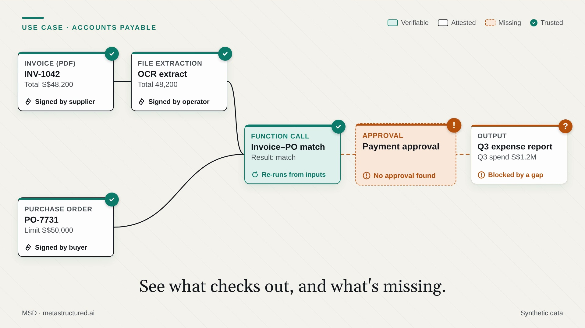
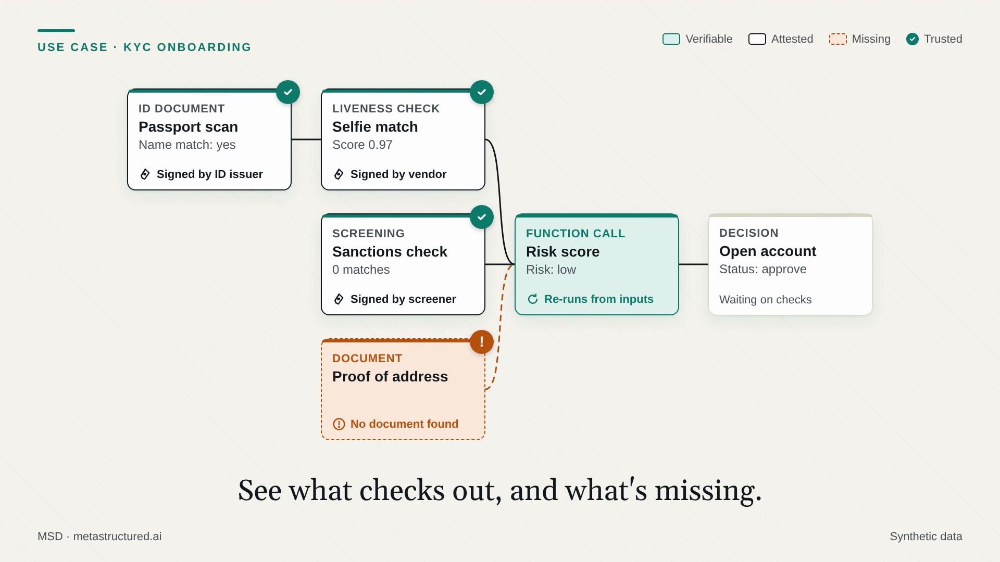
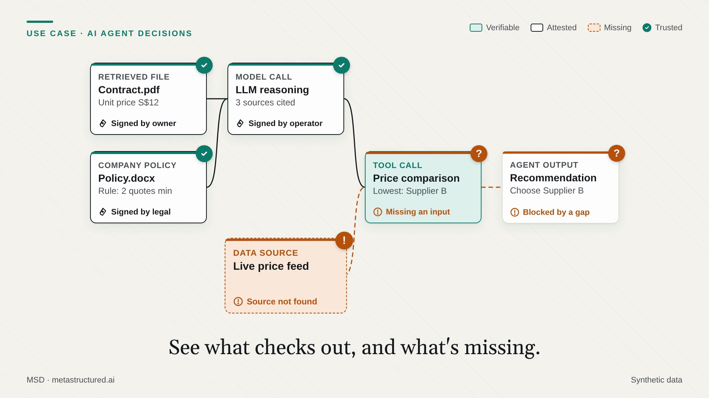

MSD helps teams show where a figure came from, what happened to it along the way, and what is missing — so the evidence arrives with the number instead of being reconstructed months later.
Free and open. Nothing to request, no account needed.
MSD is a chain of custody for data. It records what each value was made from, by whom, and in what way — so the evidence travels with the number instead of living in a separate system.
Three worked examples. Each follows one figure across several systems and shows what the evidence looks like when it holds — and what it looks like when a step is missing.

MSD for accounting For the person who has to close the books and show why the figure is right. An invoice, a PO, and a missing approval ›
MSD for compliance For the person who has to prove an onboarding decision was properly supported. Three vendor checks, one document never filed ›
MSD for AI For the person answering what an agent based its recommendation on. A citation nobody can produce ›Already have a file to check? Look it up on the MSD Network. Building with it? The tools and SDK are public, and the protocol is open to contributions.
MSD is early. If you want to hear when there is something worth trying — a release, a tool, a worked example — leave an address and nothing else.
We will send the one-page overview with it: what MSD is, what it costs to try, and where it does not help yet.
MSD is an open protocol that anyone can use, implement and improve. It is early, and that is the point — there is room to shape it.
Every claim on this site was checked against the running tooling, and the tests are public: five reproducible test notebooks, including what did not work.